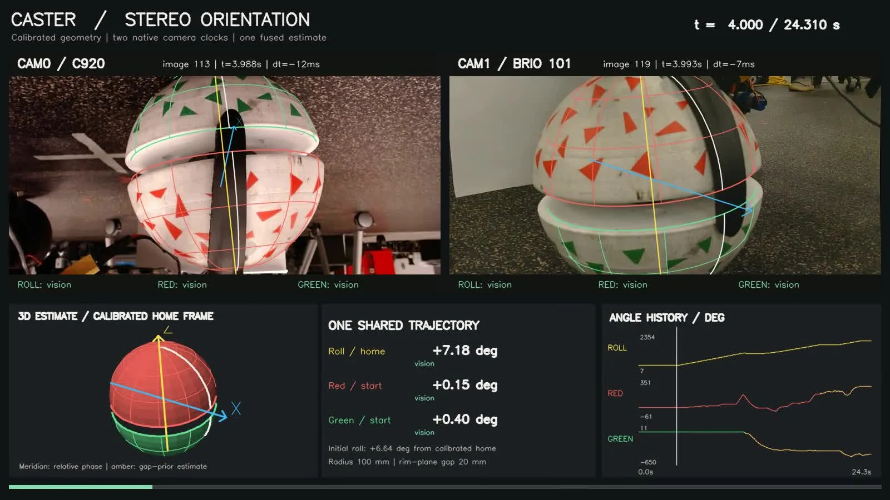
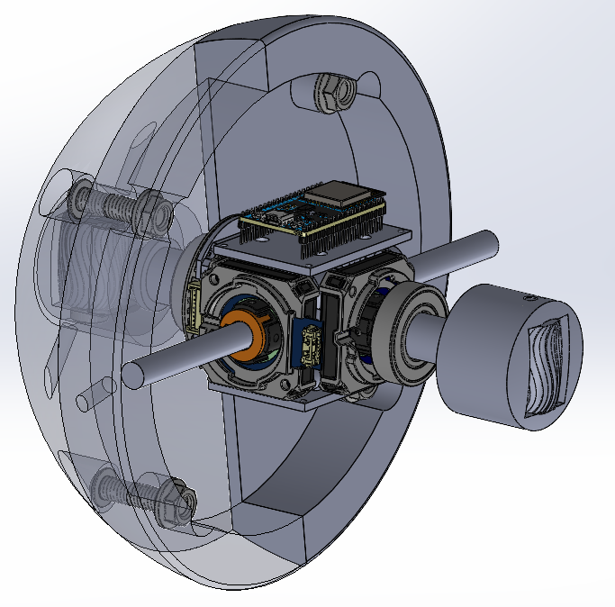

Support-caster behavior
Integrating a split-spherical caster, studying its rolling and contact behavior, and building encoder instrumentation for real-time orientation and angular-velocity measurements.
Mechanism, experiments, and kinematics →Caster trials + trajectory deviation →Watch HAMR platform tests ↗
Current buildEncoder-integrated casterOrientation and angular velocity ↗